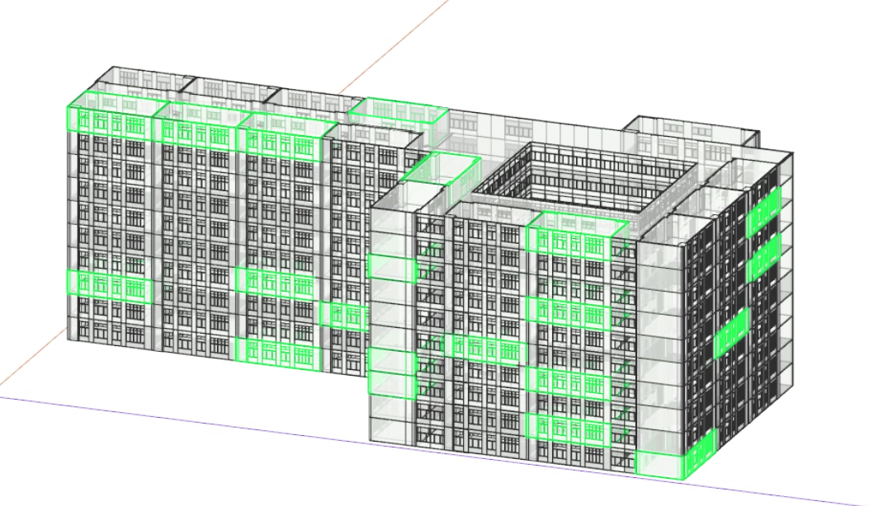

<!DOCTYPE html>
<html>
<head>
    <meta http-equiv="Content-Type" content="text/html; charset=utf-8"/>
    <meta name="viewport" content="initial-scale=1.0, user-scalable=no"/>
    <style type="text/css">
        body, html, #allmap{
            width: 100%;
            height: 100%;
            overflow: hidden;
            margin: 0;
            font-family: "微软雅黑";
        }

    </style>
    <script type="text/javascript"
            src="https://api.map.baidu.com/api?type=webgl&v=1.0&ak=ekMOTS0LGI8r1IdfIYyTPlNsFt2zMOQF"></script>
	<!--<script type="text/javascript" src="//api.map.baidu.com/library/AreaRestriction/1.2/src/AreaRestriction_min.js"></script>-->
    <title>校园视角</title>
</head>
<body>
<div id="allmap"></div>
</body>
</html>

<script type="text/javascript">
    // 信息窗口功能
    var map = new BMapGL.Map("allmap");
    map.enableScrollWheelZoom(true);
    var point = new BMapGL.Point(117.27838, 39.07737);
    map.centerAndZoom(point, 17);

</script>
<script>
    var marker = new BMapGL.Marker(point);  // 创建标注
    map.addOverlay(marker);              // 将标注添加到地图中

    var sContent = `<h4 style='margin:0 0 5px 0;'>双子楼</h4>
    
    <p style='margin:0;line-height:1.5;font-size:13px;text-indent:2em'>
    目前教室情况：\n A103(k) A104(k) A109(v) A110(v)
    </p></div>`;

var infoWindow = new BMapGL.InfoWindow(sContent);
// marker添加点击事件
marker.addEventListener('click', function () {
    this.openInfoWindow(infoWindow);
    // 图片加载完毕重绘infoWindow
    document.getElementById('imgDemo').onload = function () {
        infoWindow.redraw(); // 防止在网速较慢时生成的信息框高度比图片总高度小，导致图片部分被隐藏
    };
});

    // var opts = {
    //     width: 200,     // 信息窗口宽度
    //     height: 100,     // 信息窗口高度
    //     title: "双子楼", // 信息窗口标题
    //     message: "双子楼",
    // }
    // var infoWindow = new BMapGL.InfoWindow("目前教室情况：\n A103(k) A104(k) A109(v) A110(v)", opts);  // 创建信息窗口对象
    // marker.addEventListener("click", function(){
    // 	map.openInfoWindow(infoWindow, point); //开启信息窗口
    // });
    //
    // window.onload = function (event) {
    //     map.openInfoWindow(infoWindow, point); //开启信息窗口
    // };


    map.setMapStyleV2({
        styleId: 'fb26c084378114e061731e487524aebf'
    });


</script>

<script type="text/javascript">
     var cp1 = new BMapGL.Point(117.27855, 39.07490);
    map.addOverlay(new BMapGL.Marker(cp1));
    var marker1 = new BMapGL.Marker(cp1);  // 创建标注
    map.addOverlay(marker1);              // 将标注添加到地图中
    var opts1 = {
        width: 200,     // 信息窗口宽度
        height: 100,     // 信息窗口高度
        title: "17号楼", // 信息窗口标题
        message: "17号楼",
    }
    var infoWindow1 = new BMapGL.InfoWindow("目前教室情况：\n 101(k) 102(k) 201(v) 202(v)", opts1);  // 创建信息窗口对象
    marker1.addEventListener("click", function(){
    	map.openInfoWindow(infoWindow1, cp1); //开启信息窗口
    });

    window.onload = function (event) {
        map.openInfoWindow(infoWindow1, cp1); //开启信息窗口
    };


</script>

<script type="text/javascript">
     var cp2 = new BMapGL.Point(117.28158, 39.07279);
    map.addOverlay(new BMapGL.Marker(cp2));
    var marker2 = new BMapGL.Marker(cp2);  // 创建标注
    map.addOverlay(marker2);              // 将标注添加到地图中
    var opts2 = {
        width: 200,     // 信息窗口宽度
        height: 100,     // 信息窗口高度
        title: "学一食堂", // 信息窗口标题
        message: "学一食堂",
    }
    var infoWindow2 = new BMapGL.InfoWindow("目前就餐情况：\n 拥挤", opts2);  // 创建信息窗口对象
    marker2.addEventListener("click", function(){
    	map.openInfoWindow(infoWindow2, cp2); //开启信息窗口
    });

    window.onload = function (event) {
        map.openInfoWindow(infoWindow2, cp2); //开启信息窗口
    };
</script>

